微服务之事务处理
Informal Essay By English¶
Hi guys、happy labor day. Everyone should have a good time to relax during the Labor Day holiday. But don't forget to improve yourself during the holiday period
参考书籍：
“凤凰架构” “微服务架构设计模式”
引言¶
微服务架构下最关心的一个问题是如何实现跨多个服务的事务。 事务是每个企业级应用程序的基本要素。本文将详细地介绍本地事务、全局事务、共享事务、分布式事务等知识点（关系型数据库mysql的角度去解释）
本地事务¶
本地事务是指仅操作单一事务资源的、不需要全局事务管理器进行协调的事务。
本地事务是最基础的一种事务解决方案，只适用于单个服务使用单个数据源的场景（其实也就是数据库事务）。往往我们在解释数据库事务的时候会从四种属性即事务的“ACID”特性去解释，但是“凤凰架构”的作者认为这四种特性并不正交，A、I、D 是手段，C 是目的，前者是因，后者是果（个人认为解释的很好），对于这几种属性的解释，原文如下：
事务处理几乎在每一个信息系统中都会涉及，它存在的意义是为了保证系统中所有的数据都是符合期望的，且相互关联的数据之间不会产生矛盾，即数据状态的一致性（Consistency）。
按照数据库的经典理论，要达成这个目标，需要三方面共同努力来保障。
- 原子性（Atomic）：在同一项业务处理过程中，事务保证了对多个数据的修改，要么同时成功，要么同时被撤销。
- 隔离性（Isolation）：在不同的业务处理过程中，事务保证了各自业务正在读、写的数据互相独立，不会彼此影响。
- 持久性（Durability）：事务应当保证所有成功被提交的数据修改都能够正确地被持久化，不丢失数据。
而事务的几种属性的实现原理就需要追究到ARIES 理论，感兴趣的小伙伴可以去看看，大致内容如下图：
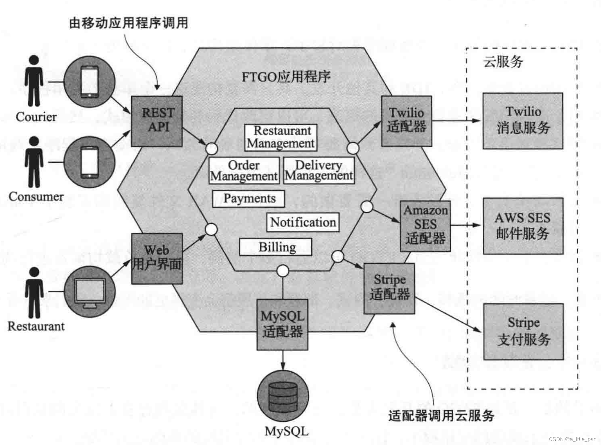
如果是比较了解mysql数据库的小伙伴应该能一眼看到几个关键字像Redo log、Undo log、 WAL（先写日志）这篇文章里面都有相应的解释，推荐大家去看看原文
原子性和持久性¶
原子性和持久性是关联密切相关的两个属性，特此放到一起说明。原子性保证了事务的多个操作要么都生效要么都不生效，不会存在中间状态；持久性保证了一旦事务生效，就不会再因为任何原因而导致其修改的内容被撤销或丢失。
但是数据库是怎么去保证其原子性和持久性的呢？在数据库发展初期是采用的一种叫Commit Logging 机制，如何去理解这个commit logging，举个例子（引用自“凤凰架构”）：
购买一本书需要修改三个数据：在用户账户中减去货款、在商家账户中增加货款、在商品仓库中标记一本书为配送状态。由于写入存在中间状态，所以可能发生以下情形：
- 未提交事务，写入后崩溃：程序还没修改完三个数据，但数据库已经将其中一个或两个数据的变动写入磁盘，此时出现崩溃，一旦重启之后，数据库必须要有办法得知崩溃前发生过一次不完整的购物操作，将已经修改过的数据从磁盘中恢复成没有改过的样子，以保证原子性。
- 已提交事务，写入前崩溃：程序已经修改完三个数据，但数据库还未将全部三个数据的变动都写入到磁盘，此时出现崩溃，一旦重启之后，数据库必须要有办法得知崩溃前发生过一次完整的购物操作，将还没来得及写入磁盘的那部分数据重新写入，以保证持久性
由于写入中间状态与崩溃都是无法避免的，为了保证原子性和持久性，就只能在崩溃后采取恢复的补救措施，这种数据恢复操作被称为“崩溃恢复”（Crash Recovery，也有资料称作 Failure Recovery 或 Transaction Recovery）
为了能够顺利地完成崩溃恢复，在磁盘中写入数据就不能像程序修改内存中变量值那样，直接改变某表某行某列的某个值，而是必须将修改数据这个操作所需的全部信息，包括修改什么数据、数据物理上位于哪个内存页和磁盘块中、从什么值改成什么值，等等，以日志的形式——即仅进行顺序追加的文件写入的形式（这是最高效的写入方式）先记录到磁盘中。只有在日志记录全部都安全落盘，数据库在日志中看到代表事务成功提交的“提交记录”（Commit Record）后，才会根据日志上的信息对真正的数据进行修改，修改完成后，再在日志中加入一条“结束记录”（End Record）表示事务已完成持久化，这种事务实现方法被称为“Commit Logging”（提交日志）
Commit Logging 保障数据持久性、原子性的原理并不难理解：首先，日志一旦成功写入 Commit Record，那整个事务就是成功的，即使真正修改数据时崩溃了，重启后根据已经写入磁盘的日志信息恢复现场、继续修改数据即可，这保证了持久性；其次，如果日志没有成功写入 Commit Record 就发生崩溃，那整个事务就是失败的，系统重启后会看到一部分没有 Commit Record 的日志，那将这部分日志标记为回滚状态即可，整个事务就像完全没好有发生过一样，这保证了原子性。
虽然Commit Loggin机制可以保证在事务过程中保证其原子性和持久性，但是Commit Logging 存在一个巨大的先天缺陷：所有对数据的真实修改都必须发生在事务提交以后，即日志写入了 Commit Record 之后。在此之前，即使磁盘 I/O 有足够空闲、即使某个事务修改的数据量非常庞大，占用了大量的内存缓冲区，无论有何种理由，都决不允许在事务提交之前就修改磁盘上的数据，这一点是 Commit Logging 成立的前提，却对提升数据库的性能十分不利。
那么如何去提升这个性能成为了我们需要重点关注的内容，其实到这里大家也可以猜到是如何去解决的了，引言中我们提到的ARIES就开始闪亮登场，ARIES 提出了“Write-Ahead Logging”的日志改进方案，所谓“提前写入”（Write-Ahead），就是允许在事务提交之前，提前写入变动数据的意思
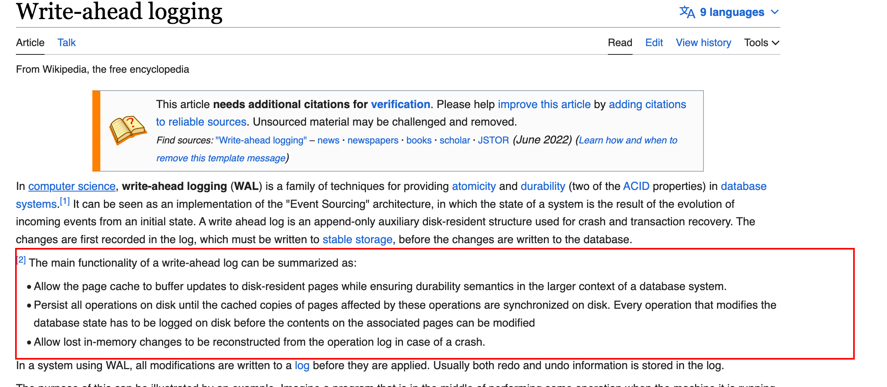
论文中对于WAL这种机制的描述如上图，翻译成中文，其大概的内容就是：
在计算机科学中，预写日志记录( WAL ) 是在数据库系统中提供原子性和持久性（ ACID属性中的两个）的一系列技术。它可以看作是“事件溯源”架构的实现，其中系统的状态是传入事件从初始状态演变而来的结果。预写日志是一种仅附加的辅助磁盘驻留结构，用于崩溃和事务恢复。更改首先记录在日志中，必须写入稳定存储，然后才能将更改写入数据库。
预写日志的主要功能可以概括为：
- 允许页面缓存缓冲对磁盘驻留页面的更新，同时确保数据库系统更大上下文中的持久性语义。
- 将所有操作保留在磁盘上，直到受这些操作影响的页面缓存副本在磁盘上同步。每个修改数据库状态的操作都必须先记录到磁盘上，然后才能修改相关页面上的内容
- 允许在发生崩溃时从操作日志中重建丢失的内存更改。
在使用 WAL 的系统中，所有修改都在应用之前写入日志。通常重做和撤消信息都存储在日志中。
这样做的目的可以用一个例子来说明。想象一下，当运行它的机器断电时，一个程序正在执行一些操作。重新启动时，该程序可能需要知道它正在执行的操作是成功、部分成功还是失败。如果使用预写日志，程序可以检查该日志，并将意外断电时应该做的事情与实际做的事情进行比较。在此比较的基础上，程序可以决定撤消它已经开始的事情，完成它已经开始的事情，或者保持原样。
在一定数量的操作之后，程序应该执行一个检查点（检查点是一种为计算系统提供容错的技术。它基本上包括保存应用程序状态的快照，以便应用程序可以在出现故障时从该点重新启动。这对于在易出故障的计算系统中执行的长时间运行的应用程序尤为重要。），将 WAL 中指定的所有更改写入数据库并清除日志。
翻译成中文之后可能大家还是不能够理解其中的一些细节，因此在此再引用凤凰架构的作者对这篇论文的一个理解：
ARIES 提出了“Write-Ahead Logging”的日志改进方案，所谓“提前写入”（Write-Ahead），就是允许在事务提交之前，提前写入变动数据的意思。
Write-Ahead Logging 先将何时写入变动数据，按照事务提交时点为界，划分为 FORCE 和 STEAL 两类情况。
- FORCE：当事务提交后，要求变动数据必须同时完成写入则称为 FORCE，如果不强制变动数据必须同时完成写入则称为 NO-FORCE。现实中绝大多数数据库采用的都是 NO-FORCE 策略，因为只要有了日志，变动数据随时可以持久化，从优化磁盘 I/O 性能考虑，没有必要强制数据写入立即进行。
- STEAL：在事务提交前，允许变动数据提前写入则称为 STEAL，不允许则称为 NO-STEAL。从优化磁盘 I/O 性能考虑，允许数据提前写入，有利于利用空闲 I/O 资源，也有利于节省数据库缓存区的内存。
Commit Logging 允许 NO-FORCE，但不允许 STEAL。因为假如事务提交前就有部分变动数据写入磁盘，那一旦事务要回滚，或者发生了崩溃，这些提前写入的变动数据就都成了错误。
Write-Ahead Logging 允许 NO-FORCE，也允许 STEAL，它给出的解决办法是增加了另一种被称为 Undo Log 的日志类型，当变动数据写入磁盘前，必须先记录 Undo Log，注明修改了哪个位置的数据、从什么值改成什么值，等等。以便在事务回滚或者崩溃恢复时根据 Undo Log 对提前写入的数据变动进行擦除。Undo Log 现在一般被翻译为“回滚日志”，此前记录的用于崩溃恢复时重演数据变动的日志就相应被命名为 Redo Log，一般翻译为“重做日志”。由于 Undo Log 的加入，Write-Ahead Logging 在崩溃恢复时会执行以下三个阶段的操作。
- 分析阶段（Analysis）：该阶段从最后一次检查点（Checkpoint，可理解为在这个点之前所有应该持久化的变动都已安全落盘）开始扫描日志，找出所有没有 End Record 的事务，组成待恢复的事务集合，这个集合至少会包括 Transaction Table 和 Dirty Page Table 两个组成部分。
- 重做阶段（Redo）：该阶段依据分析阶段中产生的待恢复的事务集合来重演历史（Repeat History），具体操作为：找出所有包含 Commit Record 的日志，将这些日志修改的数据写入磁盘，写入完成后在日志中增加一条 End Record，然后移除出待恢复事务集合。
- 回滚阶段（Undo）：该阶段处理经过分析、重做阶段后剩余的恢复事务集合，此时剩下的都是需要回滚的事务，它们被称为 Loser，根据 Undo Log 中的信息，将已经提前写入磁盘的信息重新改写回去，以达到回滚这些 Loser 事务的目的。
数据库按照是否允许 FORCE 和 STEAL 可以产生共计四种组合，从优化磁盘 I/O 的角度看，NO-FORCE 加 STEAL 组合的性能无疑是最高的；从算法实现与日志的角度看 NO-FORCE 加 STEAL 组合的复杂度无疑也是最高的。这四种组合与 Undo Log、Redo Log 之间的具体关系如下图所示：
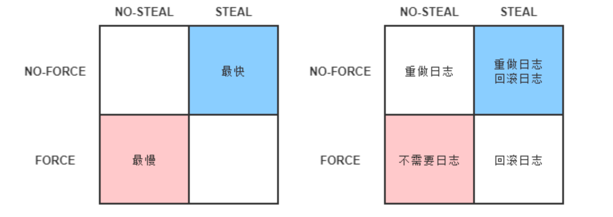
其实在论文里面还提到了一种通过Shadow page(在计算机科学中，影子分页是一种在数据库系统中提供原子性和持久性的技术。此上下文中的页面指的是物理存储单元，通常为 1 到 64 KiB 的数量级。有点像java中的COW（CopyOnWriteArrayList）中复制读思路)
Shadow Paging 的大体思路是对数据的变动会写到硬盘的数据中，但并不是直接就地修改原先的数据，而是先将数据复制一份副本，保留原数据，修改副本数据。在事务过程中，被修改的数据会同时存在两份，一份是修改前的数据，一份是修改后的数据，这也是“影子”（Shadow）这个名字的由来。当事务成功提交，所有数据的修改都成功持久化之后，最后一步是去修改数据的引用指针，将引用从原数据改为新复制出来修改后的副本，最后的“修改指针”这个操作将被认为是原子操作，现代磁盘的写操作可以认为在硬件上保证了不会出现“改了半个值”的现象。所以 Shadow Paging 也可以保证原子性和持久性。Shadow Paging 实现事务要比 Commit Logging 更加简单，但涉及隔离性与并发锁时，Shadow Paging 实现的事务并发能力就相对有限，因此在高性能的数据库中应用不多。
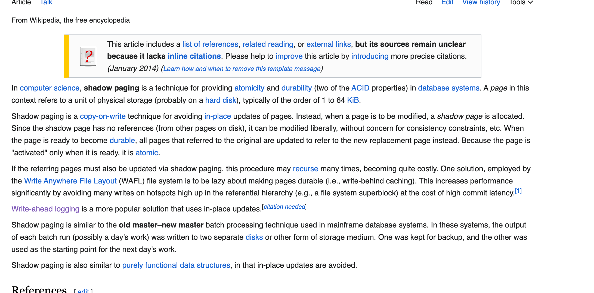
到此，我们就已经介绍完了数据库是如何保证原子性和持久性的，如果对这块的知识很感兴趣的小伙伴可以去看看原论文，下面我们再来介绍一下数据库是如何保证隔离性
隔离性¶
事务的隔离性是指一个事务的执行 ，即一个事务内部的操作及使用的数据对并发的其他事务是隔离的，并发执行的各个事务之间不能互相干扰。
如果无法保证隔离性会怎么样?假设A账户有200元，B账户0元。A账户往B账户转账两次，每次金额为50 元，分别在两个事务中执行。如果无法保证隔离性，会出现下面的情形
UPDATE accounts SET money = money - 50 WHERE NAME = 'AA';
UPDATE accounts SET money = money + 50 WHERE NAME = 'BB';
我们从隔离性的定义上就能嗅出隔离性肯定与并发密切相关，因为如果没有并发，所有事务全都是串行的，那就不需要任何隔离，或者说这样的访问具备了天然的隔离性。但现实情况不可能没有并发，要在并发下实现串行的数据访问该怎样做？数据库提供了两种方案：第一种是通过加锁（很容易就想到）、第二种是通过MVCC
加锁¶
在数据库中，除传统的计算资源(如CPU、RAM、I/O等)的争用以外，数据也是一种供许多用户共享的资源。为保证数据的一致性，需要对并发操作进行控制，因此产生了锁 。同时锁机制也为实现MySQL 的各个隔离级别提供了保证。 锁冲突也是影响数据库并发访问性能的一个重要因素。所以锁对数据库而言显得尤其重要，也更加复杂。现代数据库均提供了以下三种锁：
- 写锁（Write Lock，也叫作排他锁，eXclusive Lock，简写为 X-Lock）：如果数据有加写锁，就只有持有写锁的事务才能对数据进行写入操作，数据加持着写锁时，其他事务不能写入数据，也不能施加读锁。
- 读锁（Read Lock，也叫作共享锁，Shared Lock，简写为 S-Lock）：多个事务可以对同一个数据添加多个读锁，数据被加上读锁后就不能再被加上写锁，所以其他事务不能对该数据进行写入，但仍然可以读取。对于持有读锁的事务，如果该数据只有它自己一个事务加了读锁，允许直接将其升级为写锁，然后写入数据。
- 范围锁（Range Lock）：对于某个范围直接加排他锁，在这个范围内的数据不能被写入，如：Innodb中的Gap锁（请注意“范围不能被写入”与“一批数据不能被写入”的差别，即不要把范围锁理解成一组排他锁的集合。加了范围锁后，不仅无法修改该范围内已有的数据，也不能在该范围内新增或删除任何数据，后者是一组排他锁的集合无法做到的）
MVCC¶
MVCC (Multiversion Concurrency Control)，多版本并发控制。顾名思义，MVCC 是通过数据行的多个版本管理来实现数据库的并发控制 。这项技术使得在InnoDB的事务隔离级别下执行一致性读操作有了保证。换言之，就是为了查询一些正在被另一个事务更新的行，并且可以看到它们被更新之前的值，这样在做查询的时候就不用等待另一个事务释放锁。在这句话中，“版本”是个关键词，你不妨将版本理解为数据库中每一行记录都存在两个看不见的字段：CREATE_VERSION 和 DELETE_VERSION，这两个字段记录的值都是事务 ID，事务 ID 是一个全局严格递增的数值，然后根据以下规则写入数据。
- 插入数据时：CREATE_VERSION 记录插入数据的事务 ID，DELETE_VERSION 为空。
- 删除数据时：DELETE_VERSION 记录删除数据的事务 ID，CREATE_VERSION 为空。
- 修改数据时：将修改数据视为“删除旧数据，插入新数据”的组合，即先将原有数据复制一份，原有数据的 DELETE_VERSION 记录修改数据的事务 ID，CREATE_VERSION 为空。复制出来的新数据的 CREATE_VERSION 记录修改数据的事务 ID，DELETE_VERSION 为空。
此时，如有另外一个事务要读取这些发生了变化的数据，将根据隔离级别来决定到底应该读取哪个版本的数据。
- 隔离级别是可重复读：总是读取 CREATE_VERSION 小于或等于当前事务 ID 的记录，在这个前提下，如果数据仍有多个版本，则取最新（事务 ID 最大）的。
- 隔离级别是读已提交：总是取最新的版本即可，即最近被 Commit 的那个版本的数据记录。
至此，隔离性我们就介绍完了～，下面我们就开始介绍全局事务
全局事务¶
全局事务是由资源管理器管理和协调的事务。另一种对全局事务的定义是：单个服务使用多个数据源场景的事务。请注意，理论上真正的全局事务并没有“单个服务”的约束
全局事务是一个DTP模型的事务，所谓DTP模型指的是(X/Open Distributed Transaction Processing Reference Model)，是这个组织定义的一套分布式事务的标准，也就是了定义了规范和API接口，由厂商进行具体的实现。 其核心内容是定义了全局的事务管理器（Transaction Manager，用于协调全局事务）和局部的资源管理器（Resource Manager，用于驱动本地事务）之间的通信接口。
X/Open DTP 定义了三个组件和两个协议： - AP(Application Program)：也就是应用程序，可以理解为使用DTP的程序 - RM(Resource Manager)：资源管理器，这里可以理解为一个DBMS系统，或者消息服务器管理系统，应用程序通过资源管理器对资源进行控制。 - TM(Transaction Manager)：事务管理器，负责协调和管理事务，提供给AP应用程序编程接口以及管理资源管理器 - XA协议：应用或应用服务器与事务管理之前通信的接口 - TX协议：全局事务管理器与资源管理器之间通信的接口
我们着重关注XA协议，在XA协议中将事务提交拆分成为两阶段过程：
- 准备阶段：又叫作投票阶段，在这一阶段，协调者询问事务的所有参与者是否准备好提交，参与者如果已经准备好提交则回复 Prepared，否则回复 Non-Prepared。这里所说的准备操作跟人类语言中通常理解的准备并不相同，对于数据库来说，准备操作是在重做日志中记录全部事务提交操作所要做的内容，它与本地事务中真正提交的区别只是暂不写入最后一条 Commit Record 而已，这意味着在做完数据持久化后并不立即释放隔离性，即仍继续持有锁，维持数据对其他非事务内观察者的隔离状态。
- 提交阶段：又叫作执行阶段，协调者如果在上一阶段收到所有事务参与者回复的 Prepared 消息，则先自己在本地持久化事务状态为 Commit，在此操作完成后向所有参与者发送 Commit 指令，所有参与者立即执行提交操作；否则，任意一个参与者回复了 Non-Prepared 消息，或任意一个参与者超时未回复，协调者将自己的事务状态持久化为 Abort 之后，向所有参与者发送 Abort 指令，参与者立即执行回滚操作。对于数据库来说，这个阶段的提交操作应是很轻量的，仅仅是持久化一条 Commit Record 而已，通常能够快速完成，只有收到 Abort 指令时，才需要根据回滚日志清理已提交的数据，这可能是相对重负载的操作。
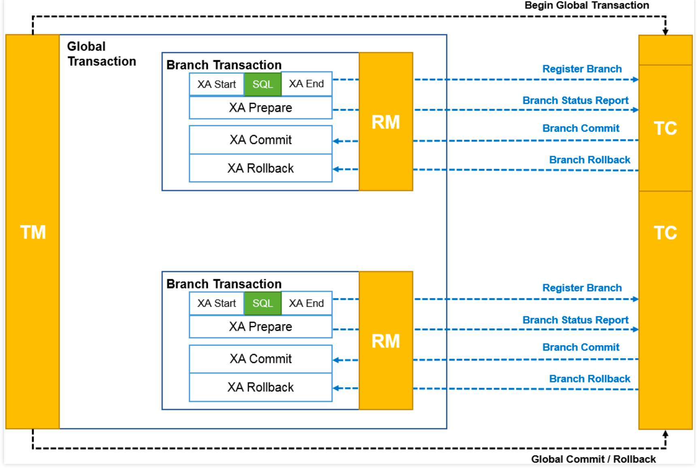
以上这两个过程被称为“两段式提交”（2 Phase Commit，2PC）协议，而它能够成功保证一致性还需要一些其他前提条件：
- 必须假设网络在提交阶段的短时间内是可靠的，即提交阶段不会丢失消息。同时也假设网络通信在全过程都不会出现误差，即可以丢失消息，但不会传递错误的消息，XA 的设计目标并不是解决诸如拜占庭将军一类的问题。两段式提交中投票阶段失败了可以补救（回滚），而提交阶段失败了无法补救（不再改变提交或回滚的结果，只能等崩溃的节点重新恢复），因而此阶段耗时应尽可能短，这也是为了尽量控制网络风险的考虑。
- 必须假设因为网络分区、机器崩溃或者其他原因而导致失联的节点最终能够恢复，不会永久性地处于失联状态。由于在准备阶段已经写入了完整的重做日志，所以当失联机器一旦恢复，就能够从日志中找出已准备妥当但并未提交的事务数据，并向协调者查询该事务的状态，确定下一步应该进行提交还是回滚操作。
上面所说的协调者、参与者都是可以由数据库自己来扮演的，不需要应用程序介入。协调者一般是在参与者之间选举产生的，而应用程序相对于数据库来说只扮演客户端的角色。两段式提交的交互时序如下图所示。
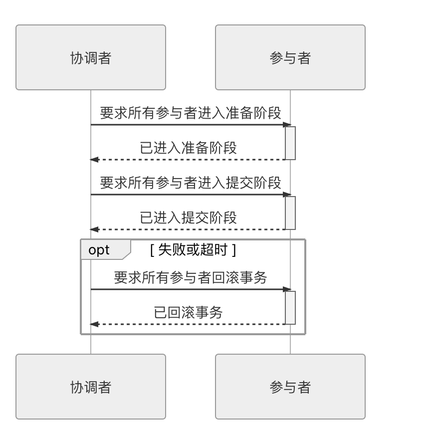
两段式提交原理简单，并不难实现，但有几个非常显著的缺点
- 单点问题：协调者在两段提交中具有举足轻重的作用，协调者等待参与者回复时可以有超时机制，允许参与者宕机，但参与者等待协调者指令时无法做超时处理。一旦宕机的不是其中某个参与者，而是协调者的话，所有参与者都会受到影响。如果协调者一直没有恢复，没有正常发送 Commit 或者 Rollback 的指令，那所有参与者都必须一直等待。
- 性能问题：两段提交过程中，所有参与者相当于被绑定成为一个统一调度的整体，期间要经过两次远程服务调用，三次数据持久化（准备阶段写重做日志，协调者做状态持久化，提交阶段在日志写入 Commit Record），整个过程将持续到参与者集群中最慢的那一个处理操作结束为止，这决定了两段式提交的性能通常都较差。
- 一致性风险：前面已经提到，两段式提交的成立是有前提条件的，当网络稳定性和宕机恢复能力的假设不成立时，仍可能出现一致性问题。宕机恢复能力这一点不必多谈，1985 年 Fischer、Lynch、Paterson 提出了“FLP 不可能原理”，证明了如果宕机最后不能恢复，那就不存在任何一种分布式协议可以正确地达成一致性结果。该原理在分布式中是与“CAP 不可兼得原理“齐名的理论。而网络稳定性带来的一致性风险是指：尽管提交阶段时间很短，但这仍是一段明确存在的危险期，如果协调者在发出准备指令后，根据收到各个参与者发回的信息确定事务状态是可以提交的，协调者会先持久化事务状态，并提交自己的事务，如果这时候网络忽然被断开，无法再通过网络向所有参与者发出 Commit 指令的话，就会导致部分数据（协调者的）已提交，但部分数据（参与者的）既未提交，也没有办法回滚，产生了数据不一致的问题。
为了缓解2PC的一部分缺陷，后续又提出了3PC（三段式提交）。三段式提交把原本的两段式提交的准备阶段再细分为两个阶段，分别称为 CanCommit、PreCommit，把提交阶段改称为 DoCommit 阶段。其中，新增的 CanCommit 是一个询问阶段，协调者让每个参与的数据库根据自身状态，评估该事务是否有可能顺利完成。将准备阶段一分为二的理由是这个阶段是重负载的操作，一旦协调者发出开始准备的消息，每个参与者都将马上开始写重做日志，它们所涉及的数据资源即被锁住，如果此时某一个参与者宣告无法完成提交，相当于大家都白做了一轮无用功。所以，增加一轮询问阶段，如果都得到了正面的响应，那事务能够成功提交的把握就比较大了，这也意味着因某个参与者提交时发生崩溃而导致大家全部回滚的风险相对变小。因此，在事务需要回滚的场景中，三段式的性能通常是要比两段式好很多的，但在事务能够正常提交的场景中，两者的性能都依然很差，甚至三段式因为多了一次询问，还要稍微更差一些
同样也是由于事务失败回滚概率变小的原因，在三段式提交中，如果在 PreCommit 阶段之后发生了协调者宕机，即参与者没有能等到 DoCommit 的消息的话，默认的操作策略将是提交事务而不是回滚事务或者持续等待，这就相当于避免了协调者单点问题的风险。三段式提交的操作时序如下图所示。
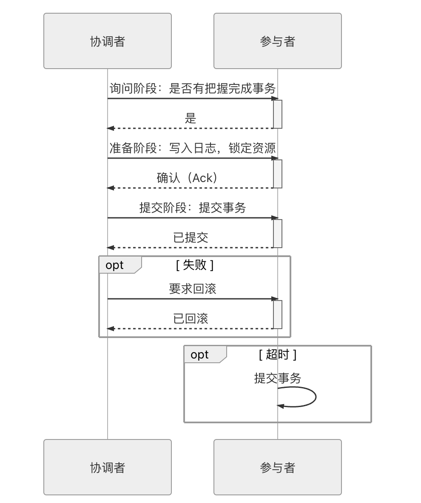
共享事务¶
共享事务（Share Transaction）是指多个服务共用同一个数据源
不推荐使用这种事务，因此不做过多介绍，大家知道有这个事务类型就可
分布式事务¶
分布式事务（Distributed Transaction）特指多个服务同时访问多个数据源的事务处理机制，请注意它与DTP 模型中“分布式事务”的差异。DTP 模型所指的“分布式”是相对于数据源而言的，并不涉及服务
目前解决分布式事务的几种方案有：可靠事件队列、TCC事务、SAGA事务，篇幅问题，本文只对SAGA事务进行说明。
SAGA事务¶
通过使用异步消息来协调一系列本地事务，从而维护多个服务之间的数据一致性。
Saga 是一种在微服务架构中维护数据一致性的机制，它可以避免分布式事务所带来的问题。 一个Saga 表示需要更新多个服务中数据的一个系统操作。
Saga 的实现包含协调Saga 步骤的逻辑。当通过系统命令启动Saga 时，协调逻辑必领选 择并通知第一个Saga 参与方执行本地事务。一旦该事务完成，Saga 协调选择并调用下 一个 Saga 参与方。这个过程一直持续到Saga 执行完所有步骤。如果任何本地事务失败，则Saga 必须以相反的顺序执行补偿事务。以下几种不同的方法可用来构建Saga 的协调逻辑：
- 协同式(choreography):把Saga 的决策和执行顺序逻辑分布在Saga 的每一个参与方 中，它们通过交换事件的方式来进行沟通。
- 编排式(orchestration):把Saga的决策和执行顺序逻辑集中在一个Saga编排器类中。 Saga 编排器发出命令式消息给各个Saga 参与方，指示这些参与方服务完成具体操作 (本地事务)
协同式Saga¶
实现Saga 的一种方法是使用协同。使用协同时，没有一个中央协调器会告诉Saga 参与方该做什么。相反Saga 参与方订阅彼此的事件并做出相应的响应，举个例子来详细解释协同式Saga：
案例：用户在美团上的店铺下单（说美团只是为了让大家有一个直观感受，其实这个案例是引用自《微服务架构设计》，由于书中的案例软件和美团类似，因此在此写的美团）
从软件层面来看，当用户在店铺下单到订单创建过程（Create Order Saga），其大致的调用过程如下：
- order service创建一个处于APROVAL_PENDING状态的Order 并发布order-Created 事件
- consumer service消费ordercreated事件，验证消费者是否可以下订单，并 发 布 consumerverified 事件
- Kitchenservice消费ordercreated事件，验证order，创建一个处于CREATE_PENDING状态的后厨工单Ticket，并发布Ticketcreated事件。
- Accountingservice消费Ordercreated事件并创建一个处于PENDING状态的CreditCardAuthorizationo
- Accountingservice消费Ticketcreated和ConsumerVerified事件，向消费者的信用卡收费，并发布creditCardauthorized事件。
- Kitchenservice消费CreditCardAuthorized事件并将Ticket的状态更改为AWAITING_ACCEPTANCE.
- 0rderservice接收CreditCardAuthorized事件，将Order的状态更改为APPROVED，并发布OrderApproved事件
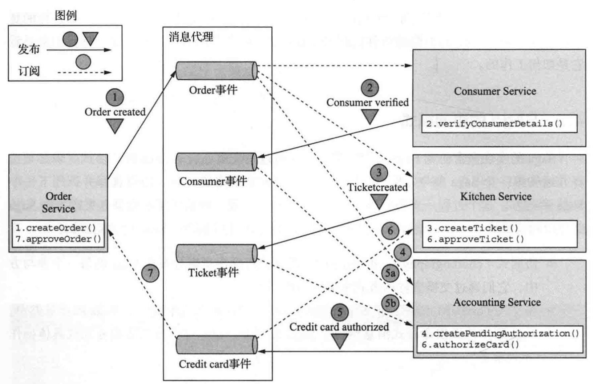
Create Order Saga还必须处理Saga参与方拒绝Order 并发布某种失败事件的场景。例如，消费者信用卡的授权可能会失败。Saga 必领执行补偿性事务来撤销已经完成的事务，其事件执行流程如下：
- order service创建一个处于APPROVAL_PENDING状态的order 并发布OrderCreated 事件
- Consumerservice消费ordercreated事件，验证消费者是否可以下订单，并发布Consumerverified事件
- Kitchenservice消费ordercreated事件，验证order，创建一个处于CREATE_PENDING状态的后厨工单Ticket，并发布Ticketcreated事件
- Accounting service消费ordercreated事件并创建一个处于PENDING状态 的CreditCardAuthorization
- Accountservice消费Ticketcreated和consumerveritied事件，向消费者的信用卡扣款(失败了)，并发布CreditCardAuthorizationFailed事件
- Kitchenservice消费CreditCardAuthorizationFailed事件，然后把后厨工单Ticket的状态更改为REJECTED
- Orderservice消费creditCardauthorizationFailed事件，并将order的状态更改为REJECTED
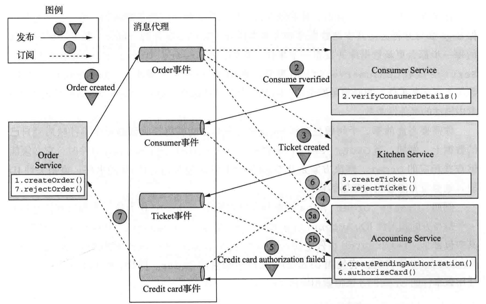
上面我们说的这个案例数据交互的完成依赖于消息中的发布/订阅模式，那我们就必须考虑一些与服务间通信相关的问题。
第一个问题是确保Saga参与方将更新共本地数据库和发布事件作为数据库事务的一部分。基于协同的Saga的每一步都会更新数据库并发布一个事件。例如，在CreateorderSaga中,Kitchen Service接收consumerverified事件，创建Ticket，并发布Ticketcreated事件。数据库更新和事件发布必须是原子的。所以我们在发布事件消息是必须是选用事务性消息。
第二个问题是确保Saga参与方必须能够将接收到的每个事件映射到自己的数据上。例如，当Orderservice收到CreditCardAuthorized事件时，它必领能够查找相应的order。解决方案是让Saga参与方发布包含相关性1D的事件，该相关性D使其他参与方能够执行数据的操作。例如，Create Order Saga的参与方可以使用orderId作为从一个参与方传递到下一个参与方的相关性ID。Accounting Service发布一个CreditcardAuthorized事件，其中包含Ticketcreated事件中的orderId。当Orderservice接收到Creditcard-Authorized事件时，它使用orderId来检素相应的Order。同样，Kitchen Service使用该事件的orderId来检素相应的Ticket
基于协同式的Saga 有以下几个好处：
- 简单:服务在创建、更新或删除业务对象时发布事件。
- 松賴合:参与方订阅事件并且彼此之间不会因此而产生轉合。
基于协同式的Saga 的几个弊端：
- 更难理解:与编排式不同，代码中没有一个单一地方定义了Saga 。相反，协调式 Saga 的逻辑分布在每个服务的实现中。因此，开发人员有时很难理解特定的Saga 是 如何工作的。
- 服务之间的循环依赖关系:Saga参与方订阅彼此的事件，这通常会导致循环依赖关系。例如OrderService-Accounting Service-Order Service。虽然这并不一定是个问题，但循环依赖性被认为是一种不好的设计风格
- 紧想合的风险:每个Saga参与方都需要订阅所有影响它们的事件。例如，Accounting Service必须订阅所有可能导致消费者信用卡被扣款或退款的事件。因此，存在一种风险，即Accounting Service的内部代码需要与Orderservice实现的订单生命周期代码保持同步更新
###### 编排式Saga
编排式是实现Saga 的另外一种方式。当使用编排式Saga时，开发人员定义一个编排器 类，这个类的唯一职责就是告诉Saga的参与方该做什么事情。Saga 编排器使用命令/ 异步 响应方式与Saga 的参与方服务通信。为了完成Saga 中的一个环节，编排器对某个参与方发出一个命令式的消息，告诉这个参与方该做什么操作。当参与方服务完成操作后，会给编排 器发送一个答复消息。编排器处理这个消息，并决定Saga的下一步操作是什么
还是使用协同式Saga中的案例来完成编排式的设计，该Saga由Createorder-saga类编排，该类使用异步请求/响应调用Saga参与方。该类跟踪流程并向Saga参与方发送命令式消息，例如Kitchen Service和ConsumerService。Create Order Saga类从其回复通道读取回复消息，然后确定Saga中的下一步(如果有的话）
Order Service首先创建(实例化)一个Order对象和一个Create Order Saga编排器对象。一切正常情况下的流程如下所示：
- Saga编排器向Consumer service发送verifyconsumer命令。
- Consumer service回复Consumer verified消息
- Saga编排器向Kitchenservice发送CreateTicket命令。
- Kitchenservice回复ricketCreated消息。
- Saga编排器向Accounting Service发送AuthorizeCard消息
- Accounting Service使用Card Authorized消息回复
- Saga编排器向Kitchen Service发送Approve Ticket命令
- Saga编排器向Order Service发送Approve Order命令
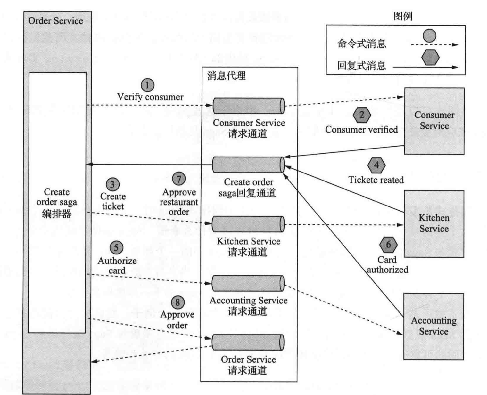
需要注意的是，在最后一步中，Saga编排器会向Order Service发送命令式消息，即使它是Order Service的一个组件。原则上，Create Order Saga可以通过直接更新order来批准订单。但为了保持一致性，Saga将order service视为另一个参与方。
上述的流程描述的是一切正常情况下，但一个Saga可能有很多场景，例如，由于Consumer Service、KitchenService或AccountingService的失败，Saga可能会失败。
那么有没有一种方案可以能很好地描述所有的可能出现的场景，答案就是：将Saga建模为状态机
状态机由一组状态和一组由事件触发的状态之间的转换组成，每个转换都可以有一个动作，对Saga 来说动作就是对某个参与方的调用。 状态之间的转换由Saga 参与方执行的本地事务完成触发。当前状态和本地事务的特定结果决定了状态转换以及执行的动作(如果有的话)。对状态机也有有效的测试策略。因此，使用状态机模型可以更轻松地设计、实现和测试Saga
通过状态机建模之后的Create Order Saga总共包含以下几种状态：
- Verifying Consumer:初始状态。当处于此状态时，该Saga正在等待Consumer Service验证消费者是否可以下订单
- Creating Ticket:该Saga正在等待对Create Ticket 命令的回复
- Authorizing Card:等待Accounting Service授权消费者的信用卡。
- Order Approved:最终状态，表示该Saga已成功完成。
- Order Rejected:最终状态，表示Order被其中一个参与方拒绝
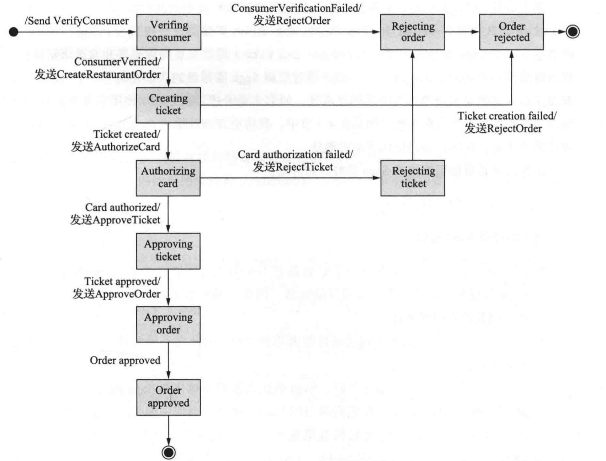
状态机还定义了许多状态转换。例如，状态机从CreatingTicket状态转换为Authorizing Card或Rejected Order状态。当它收到成功回复Create Ticket命令时，它将转换到Authorizing Card状态。或者，如果Kitchen Service无法创建Ticket，则状态机将转换为Order Rejected状态。
状态机的初始操作是将Verify Consumer命令发送到Consumer Service。Consumer Service的响应会触发下一次状态转型。如果消费者被成功验证，则Saga会创建Ticket并转换为Creating Ticket状态。但是，如果消费者验证失败，则Saga会拒绝Order并转换为OrderRejected状态。状态机经历了许多其他状态转换，由Saga参与方的响应驱动，直到达到最终状态为Order Approved或Order Rejected中的一种
基于编排的Saga 有以下好处:
- 更简单的依赖关系:编排的一个好处是它不会引人循环依赖关系 。Saga 编排器调用 Saga 参与方，但参与方不会调用编排器。因此，编排器依赖于参与方，但反之则不然，因此没有循环依赖
- 较少的耦合:每个服务实现供编排器调用的API，因此它不需要知道Saga 参与方发布的事件
- 改善关注点隔离，简化业务逻辑:Saga的协调逻辑本地化在Saga编排器中。领域对象更简单，并且不需要了解它们参与的Saga。例如，当使用编排式Saga时，order类不知道任何Saga，因此它具有更简单的状态机模型。在执行Createorder Saga期间，它直接从APPROVAL_PENDING状态转换到APPROVED状态。order类没有与Saga的步骤相对应的任何中间状态。因此，业务更加简单。
基于编排的Saga 的弊端：
- 在编排器中存在集中过多业务逻辑的风险。这会导致这样的架构设计:智能编排器告诉哑服务(dumb service)要做什么操作。幸运的是，你可以通过 设计只负责排序的编排器来避免此问题，并且不包含任何其他业务逻辑
隔离问题处理¶
在本地事务中我们说过事务中的隔离性可以有MVCC或者加锁的两种方式去实现。SAGA本身是不支持 ACID 事务的隔离属性的。这是因为一旦该事务提交，每个Saga的本地事务所做的更新都会立即被其他Sagas看到。此行为可能导致两个问题。首先，其他Saga可以在执行时更改该Saga所访问的数据。其他Saga可以在Saga完成更新之前读取其数据，因此可能会暴露不一致的数据。事实上，你可以认为Saga只满足ACD三个属性:
- 原子性:Saga 实现确保执行所有事务或撤销所有更改。
- 一致性:服务内的参照完整性(referential integrity)由本地数据库处理。服务之间的参照完整性由服务处理
- 持久性:由本地数据库处理
缺乏隔离性可能出现如下几种异常：
- 丢失更新:一个Saga 没有读取更新，而是直接覆盖了另 一个Saga 所做的更改
例如： Create order Saga的第一步创建了Order 当该Saga正在执行时，另外一个Cancel Order Saga取消了这个Order Create Order Saga的最后一步批准Order 在这种情况下，Create order saga 会忽略Cancel order saga 所做的更新并覆盖它
- 脏读: 一个事务或一个Saga读取了尚末完成的Saga所做的更新
例如： Consumer Service:增加可用额度 Order Service:将order状态更改为已取消 Delivery Service:取消送货 - 模糊或不可重复读:一个Saga的两个不同步骤读取相同的数据却获得了不同的结果， 因为另一个Saga 已经进行了更新
虽然SAGA不支持事务的隔离性，但是我们开发人员可以通过额外的编码去实现隔离性。1998年一篇名为《Semantic ACID properties in multidata- basesusing remoteprocedurecallsand updatepropagations 》的论文中描述了不使用分布式事务时如何处理多数据库架构中缺乏事务隔离的问题。论文中描述的对策如下:
- 语义锁:应用程序级的锁
- 交换式更新:把更新操作设计成可以按任何顺序执行
- 悲观视图:重新排序Saga的步骤，以最大限度地降低业务风险
- 重读值:通过重写数据来防止脏写，以在覆盖数据之前验证它是否保持不变
- 版本文件:將更新记录下来，以便可以对它们重新排序
- 业务风险评级( by value):使用每个请求的业务风险来动态选择并发机制
上面的几种方案的实现，这里就不过多去描述，大家可以去github上找到对应的案例。然后再结合本篇文章，应该可以给大家带来一点收获。